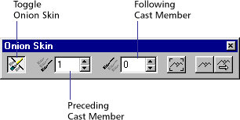
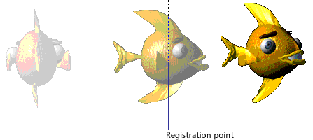
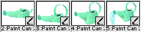

Using Director > Vector Shapes and Bitmaps > Using onion skinning
Using Director > Vector Shapes and Bitmaps > Using onion skinning |
Using onion skinning
Onion skinning derives its name from a technique used by conventional animators, who drew on very thin "onion skin" paper so that they could see through it to one or more of the previous images in the animation.
With onion skinning in Director, you can create or edit animated sequences of cast members in the Paint window using other cast members as a reference. Reference images appear dimmed in the background. While working in the Paint window, you can view not only the current cast member that you're painting but also one or more cast members blended into the image.
You can use onion skinning to do the following:
To trace over an image or create a series of images all in register (aligned) with a particular image. |
|
To see previous images in the sequence and use those images as a reference while you are drawing new ones. |
|
To create a series of images based on another parallel animation. The series of images serves as the background while you paint a series of foreground images. |
Onion skinning uses registration points to align the current cast member with the previous ones you have chosen. Be careful not to move registration points for cast members after onion skinning. If you do, the cast members may not line up the way you want them to. See Changing registration points.
You must have created some cast members in order to use onion skinning.
To activate onion skinning:
1 |
Open the Paint window and choose View > Onion Skin. The Onion Skin toolbar appears.
 |
2 |
Click the Toggle Onion Skinning button at the far left of the toolbar to enable onion skinning. |
To define the number of preceding or following cast members to display:
1 |
Open the Paint window and choose View > Onion Skin. The Onion Skin toolbar appears. |
2 |
If necessary, click the Toggle Onion Skinning button on the Onion Skin toolbar to activate onion skinning. |
3 |
Specify the number of preceding or following cast members you want to display. |
To specify the number of preceding cast members to display, enter a number in the Preceding Cast Members box. |
|
To specify the number of following cast members to display, enter a number in the Following Cast Members box.
 |
|
Two preceding cast members shown with onion skinning and registration points |
|
The specified number of cast members appear as dimmed images behind the current cast member. The order is determined by the position in the cast. |
|
To create a new cast member by tracing over a single cast member as a background image:
1 |
Open the Paint window and choose View > Onion Skin. The Onion Skin toolbar appears. |
2 |
In the Paint window, open the cast member that you want to use as the reference image or background.
|
3 |
If necessary, click the Toggle Onion Skinning button on the Onion Skin toolbar to activate onion skinning. |
4 |
To set the background image, click the Set Background button on the Onion Skin toolbar.
|
5 |
To create a new cast member, click the New Cast Member button in the Paint window.
|
6 |
Click the Show Background button on the Onion Skin toolbar.
|
The original cast member appears as a dimmed image in the Paint window. You can paint on top of the original cast member's image. |
|
7 |
Paint the new cast member using the background image as a reference.
|
To use a series of images as a background while painting a series of foreground images:
1 |
In the Cast window, arrange in consecutive order the series of cast members you want to use as your background.
 |
Cast members in both the foreground and the background series must be adjacent to each other in the cast. |
|
2 |
Open the Paint window and choose View > Onion Skin. The Onion Skin toolbar appears. |
The Onion Skin toolbar appears. |
|
3 |
If necessary, click the Toggle Onion Skinning button on the Onion Skin toolbar to activate onion skinning. |
Make sure all values in the Onion Skin toolbar are set to 0. |
|
4 |
Open the cast member you want to use as the first background cast member in the reference series. Click the Set Background button.
|
5 |
Select the position in the cast where you want the first cast member in the foreground series to appear. Click the New Cast Member button in the Paint window to create a new cast member.
|
The first cast member in the foreground series can be located anywhere in any cast. |
|
6 |
Click the Show Background button to reveal a dimmed version of the background image.
|
7 |
Click the Track Background button on the Onion Skin toolbar.
|
8 |
Paint the new cast member using the background image as a reference. |
9 |
When you have finished drawing the cast member, click the New Cast Member button again to create the next cast member. |
When Track Background is enabled, Director advances to the next background cast member in the series. Its image appears in the background in the Paint window. |
|
10 |
Repeat step 8 until you have completed drawing all the cast members in the series. |